Cobalt blue
A clear, slightly warm blue.
A studio guide · Saint-Rémy, June 1889
Imagine you are Vincent van Gogh in June 1889, a voluntary patient at the asylum in Saint-Rémy, about to paint a night sky you can only remember. This guide follows what your process would have been, from an idea you had carried for a year to the stars you painted last.
The order of work comes from MoMA's study of the painting, the materials from your letters to your brother Theo, and the sky from astronomers who have tried to read it, including a 2026 study that re-dates it. Each chapter opens with a note on what its evidence is. The slider steps through seven stages; all but the last are AI reconstructions.
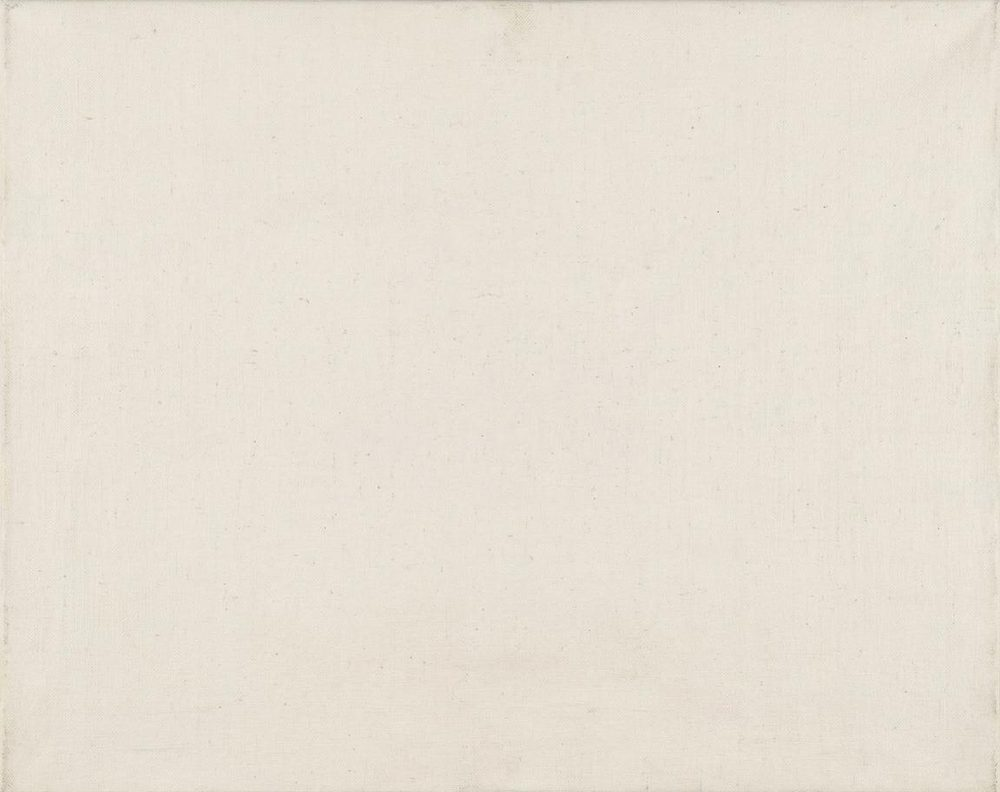
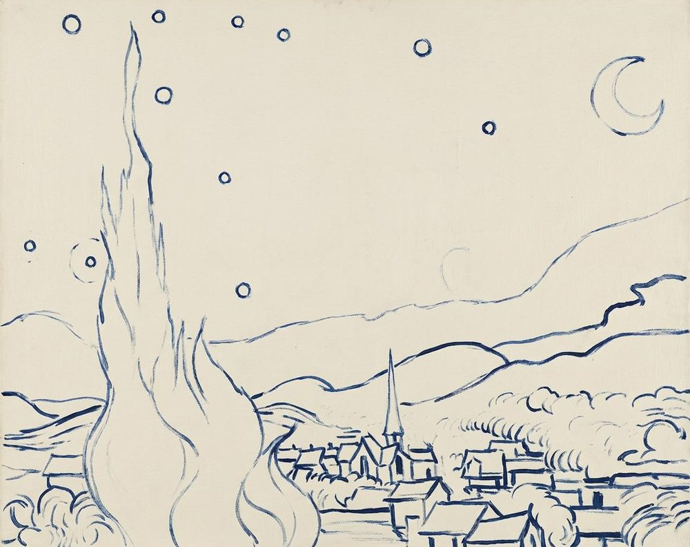
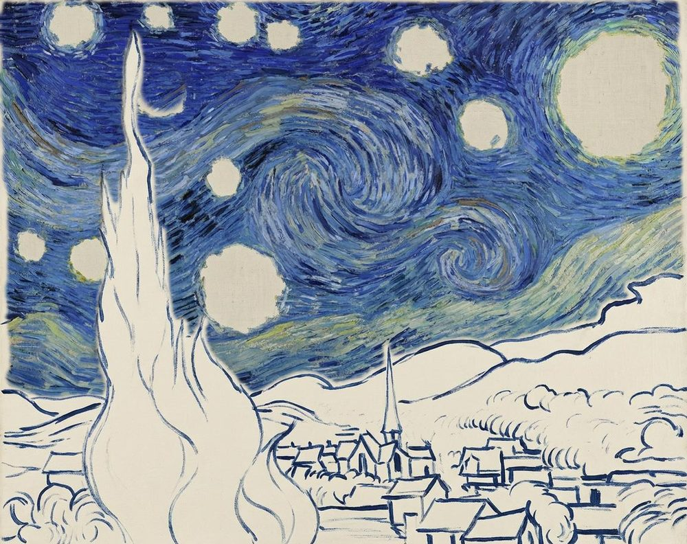
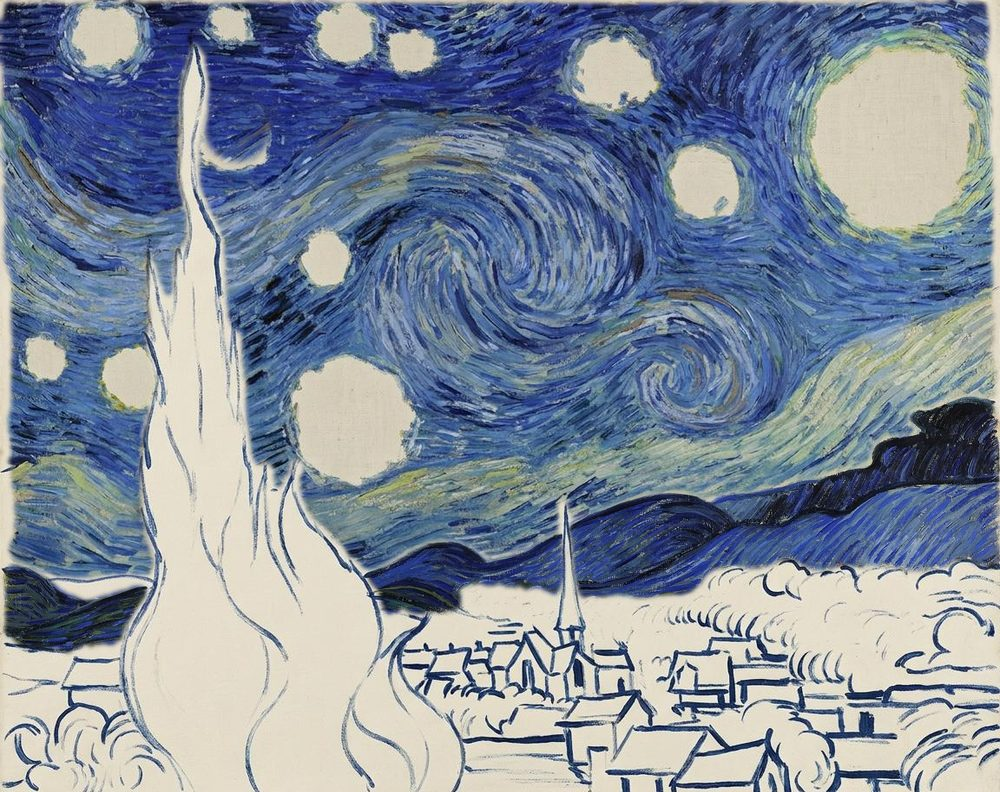
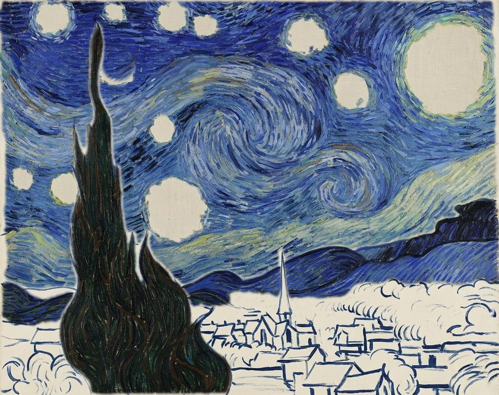
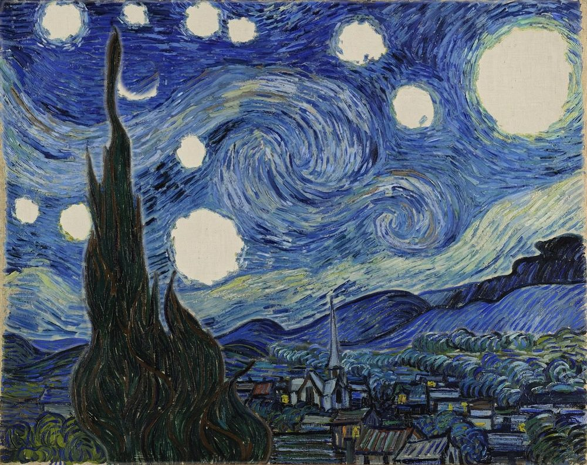
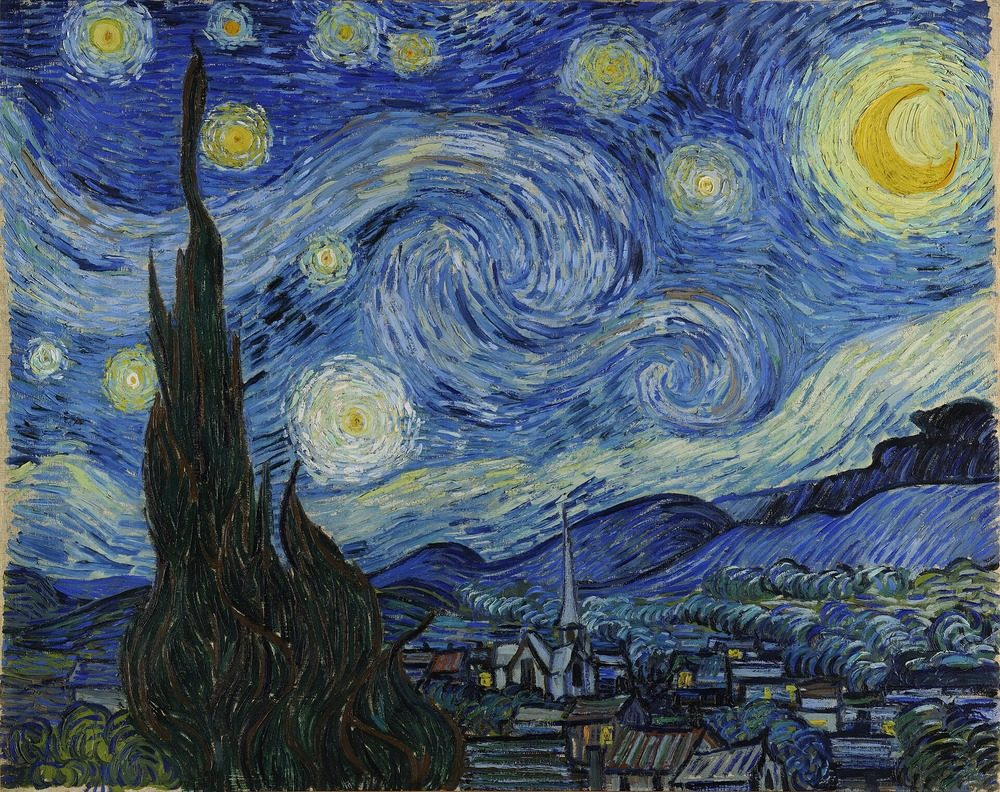
Stars and moon
Stage 7 of 7Painted into their spaces last. No colour change is documented, so this is also the painting today.
EvidenceRichard Thomson's MoMA study of the painting (2008) and your letters.
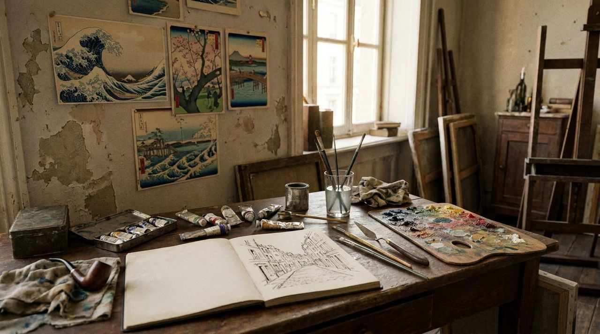
You are Vincent van Gogh, born in 1853 in Zundert in the Netherlands. You worked for the art dealers Goupil before deciding, in 1880, to teach yourself to be an artist, with your brother Theo paying your way.
Your schooling was short: a winter at the Antwerp Academy in 1885–86, then Fernand Cormon's studio in Paris from 1886. Paris gave you Japanese prints, which you collected, and painters such as Émile Bernard, Toulouse-Lautrec and the Neo-Impressionists.
In February 1888 you moved south to Arles. Paul Gauguin stayed with you from October to December and argued for painting from imagination; you had always painted from the motif in front of you. By 1889 you were looking back to Delacroix, Millet and Daubigny, and to Monticelli's thick paint.
EvidenceYour letters of 1888–89 (numbers 594, 596, 678, 691, 777, 781 and 782 in the Van Gogh Museum edition).
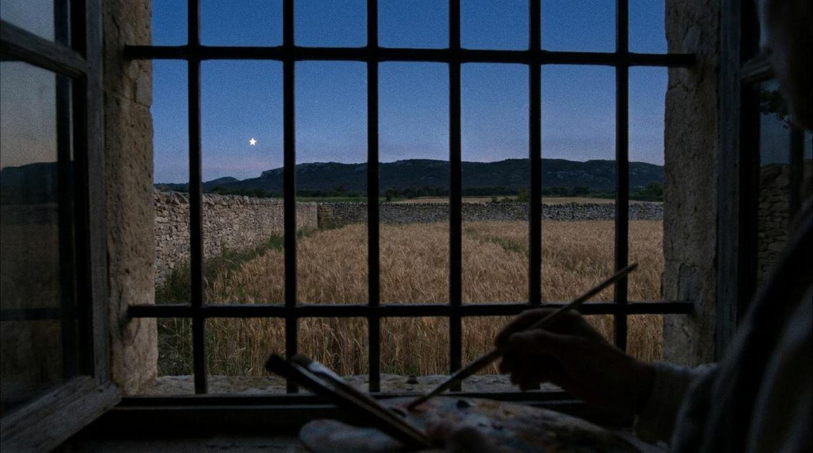
The idea is a year old. In April 1888 you wrote of wanting to paint a starry night with cypresses. In September 1888 you painted a starry sky over the Rhône at Arles on the spot, at night, under a gas lamp, and a café terrace at night without any black.
This time you can't paint on the spot. You have been in the asylum since 8 May. You may go out only by day and with an escort, and you are never out at night. One morning before sunrise you saw from your window only the morning star, and it looked very big. The editors of your letters identify it as Venus.
“laquelle paraissait très grande”
The morning star, “which looked very big”. Letter 777, to Theo, c. 31 May–6 June 1889EvidenceLetters 776 and 779, MoMA and Thomson. How the room was arranged is inferred.
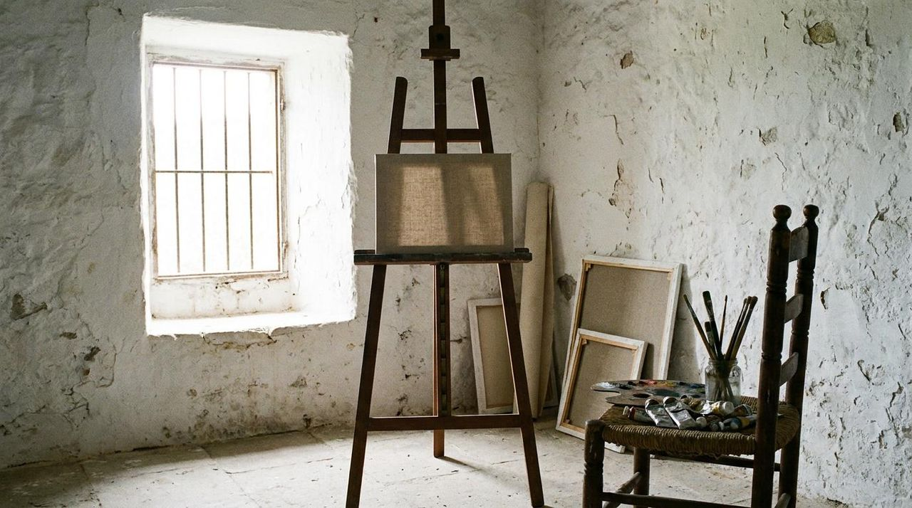
At Saint-Paul-de-Mausole you have two rooms. Your bedroom's barred window looks east over a walled square of wheat to the hills, and you watch the sun come up over it. A second room is yours to work in.
You paint The Starry Night by day, in that second room. The story that you painted it outdoors at night belongs to the Rhône picture of the year before.
Early in June you painted the view from your window. Its line of hills will reappear in the new picture, but the walled field will not, and the village could not be seen from your window at all.
EvidenceLetters 776, 777, 779 and 782, and Theo's account book. Pigment identifications come from model-based imaging and are provisional.
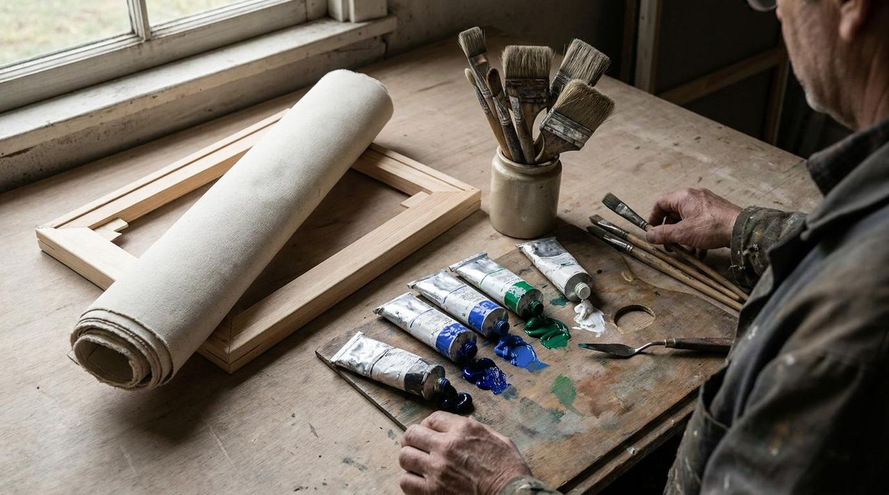
Theo sends your paint and canvas from Paris, mostly from the colour merchants Tasset et Lhote. His account book records 197 francs paid to them on 6 June 1889, and on 9 June you write that the order has arrived.
You buy canvas by the metre and probably stretch it yourself. The Starry Night is on a standard size-30 canvas with an off-white priming. On about 18 June you write that you have no white left at all.
Only one study has tried to identify the colours in this painting, and it did so by modelling multispectral images rather than taking samples. Its authors say the pigments have not been determined by the usual analytical methods, so treat the second line on each card below as a hint.
A clear, slightly warm blue.
A deep violet-blue, by now made synthetically.
A vivid copper-based green.
White for mixing every light colour.
A bright red-orange lead pigment.
Thick yellows for the stars and moon.
EvidenceThomson 2008, drawing on Sjraar van Heugten's 2008 examination of the painting. How the lay-in looked is inferred.
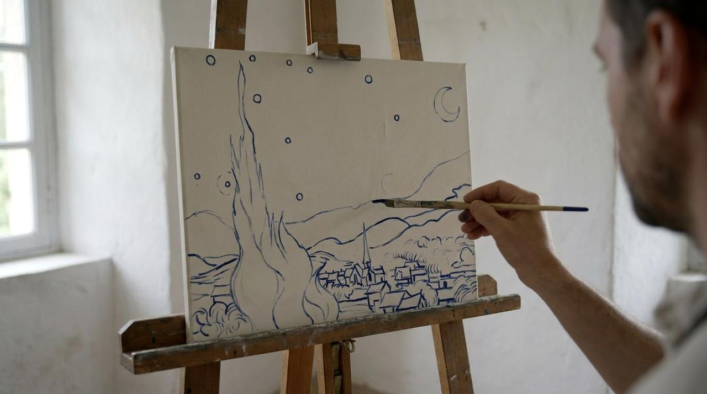
No underdrawing has been found under this painting. You place the design straight onto the canvas with the brush.
Hills from the window view, the cypress from the green wheat field, the village from the sketch on the slope. The church was really a domed building; you give it a pitched roof and a spire.
Keep unpainted spaces for the stars and the moon. You will fill them last.
The off-white priming will show through everywhere, in the sky, the land, the hills and the trees, even when the picture is finished.
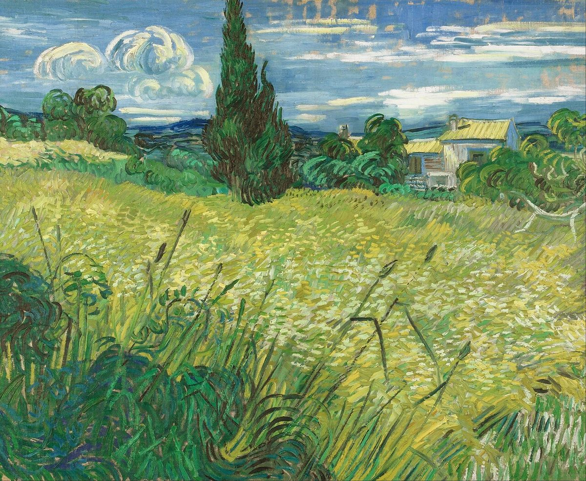
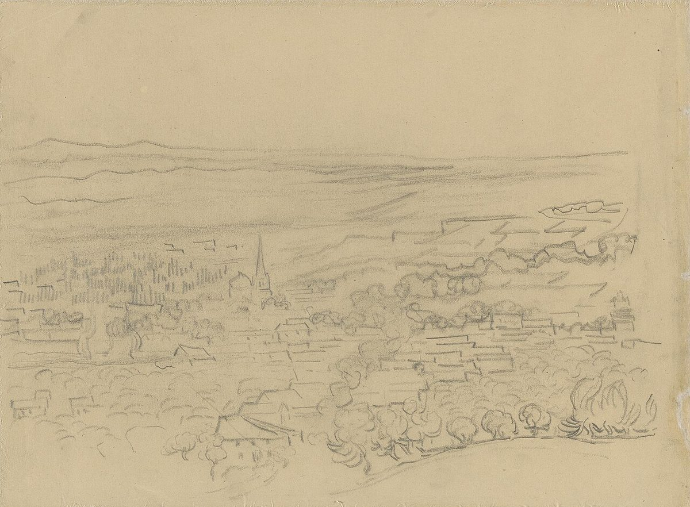
EvidenceThomson 2008, from van Heugten's examination; pigments from Zhao and colleagues (2008), model-based. The order after the sky is partly inferred.
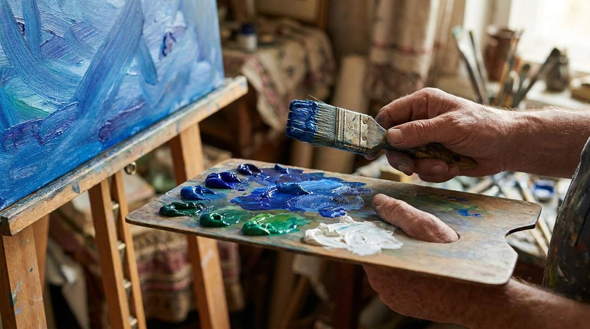
You probably paint it in two or three sessions, with drying time between. The sky goes first, wet into wet, with the stars left blank, and the stars and moon go in last. Between those two, the order below is a reasonable guess rather than a finding.
AI-generatedAfter step 5: the stars and moon
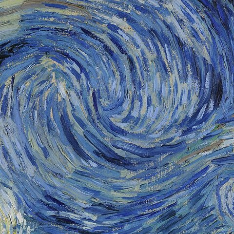
Start with the central swirl in mid-blue, then work darker blue and pale greens into it while it is wet. Above and below the swirls the strokes run roughly level, growing restless toward the right.
Leave the places for the stars and the moon bare. The off-white priming shows between your strokes, and you let it.
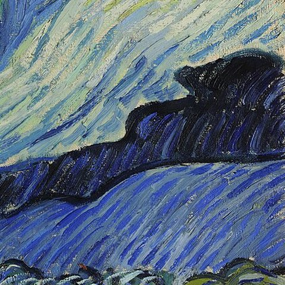
Paint the hills in the sky's own blues, so that land and sky seem made of the same stuff.
Later you go back and re-outline the right-hand ridge as you tidy the design. That second outline is still visible.
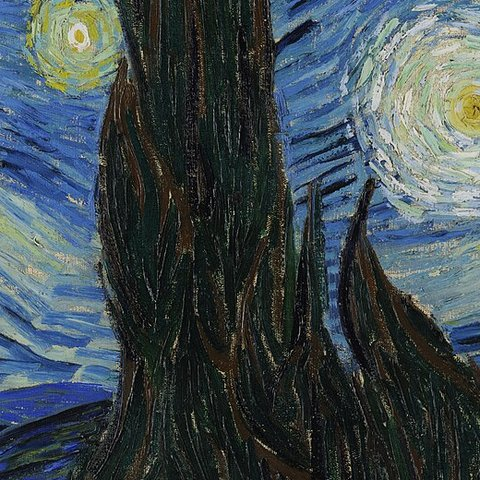
Lay the cypress in long, flame-like strokes of dark green, brown and an aubergine violet, almost all at once. It was planned from the start.
No published study says whether sky paint lies under it, so the order of this step and the last is a guess.
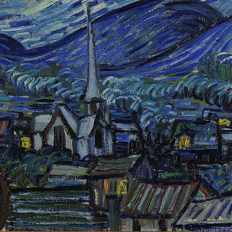
Lay in the olive-green middle ground, then block the houses in as rectangles with dull-yellow, orange and green windows, and give the roof left of the church an oxblood red.
Loop dark-green and blue-green strokes round the village for the trees, then lay peppermint green over them.
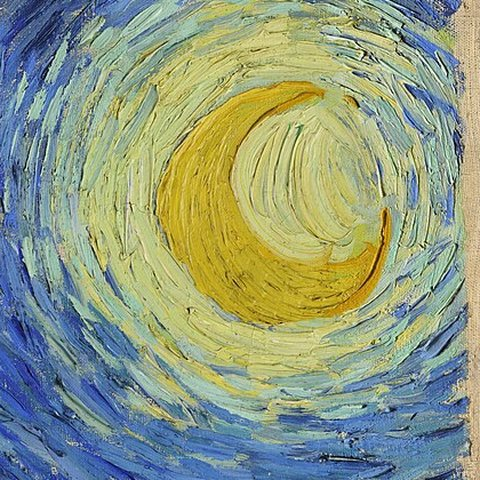
Fill the spaces you left with thick yellows and whites and their haloes. The moon is a thick orange crescent with a yellow-green ring and a duck-egg-blue glow.
One star, just right of the cypress top, is the exception: you paint it over the level sky strokes instead of into a space.
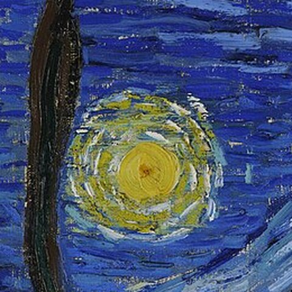
EvidenceLetters 784, 792, 805, 806, 813, 816 and 822.
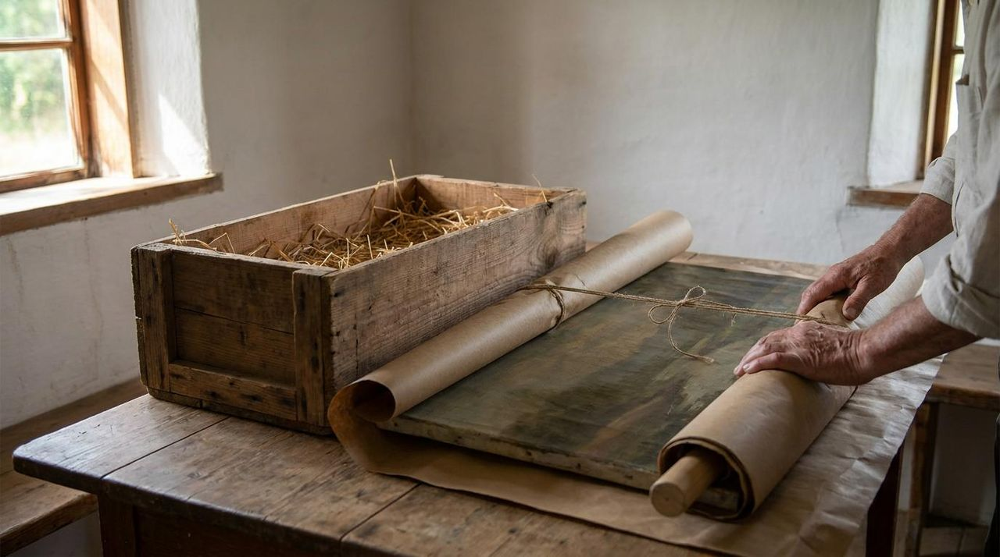
Around the end of June you make a reed-pen drawing after the painting and send it to Theo on 2 July with other drawings. It adds a star and smoke from a chimney.
You hold the canvas back from a shipment in September and send it on 28 September, probably rolled. By then you group it with two other canvases as exaggerations of arrangement.
Theo is wary. In October he writes that the search for style dulls true feeling, and you reply defending a drawing that is “plus mâle et plus volontaire”, more manly and more deliberate. In November you tell Émile Bernard that you let yourself paint stars too big, and call it another failure.
EvidenceKim, Kang, Song and Jin, Scientific Reports (2026); reactions from other astronomers; the letters edition.
Astronomers have long tried to read your sky, and only one point is safe: the bright star near the cypress is probably Venus, the morning star of your letter. Older readings found the constellation Aries or a composite of several nights.
In October 2026 a team from SLLAB Inc. and Kyung Hee University published a new reconstruction in Scientific Reports. They simulated the sky over Saint-Rémy in planetarium software checked against NASA's JPL ephemerides, fitted the painted stars to real star positions, surveyed the site in 2019, and checked weather records and your letters. They tested the method first on Millet's Starry Night and on your own Rhône and café terrace pictures.
Their argument runs like this. In mid-June 1889 the moon was gibbous, about 63% lit, which does not match your crescent. At dawn on about 22 July 1889, a waning crescent about 28% lit, Venus and the V-shaped Hyades star cluster all fit the frame of the view, and five central painted stars match the Hyades, more closely in the drawing than in the painting. They suggest you watched a real sky, stylised it, and finished the canvas in July.
Hold it lightly. It is one new study, and it conflicts with the letters edition, which places the drawing among those sent on 2 July. Other astronomers called exact dating fragile and suggested the crescent may be artistic licence. The authors themselves say they cannot tell when the painting was begun or whether it was reworked, that a good shape fit is not proof of which stars are shown, and that the sky may combine several nights. Three of them run the company that may profit from the work.
Some other claims have not held up: a 2024 paper said the swirls follow the physics of real turbulence, and in 2025 other scientists disputed it.
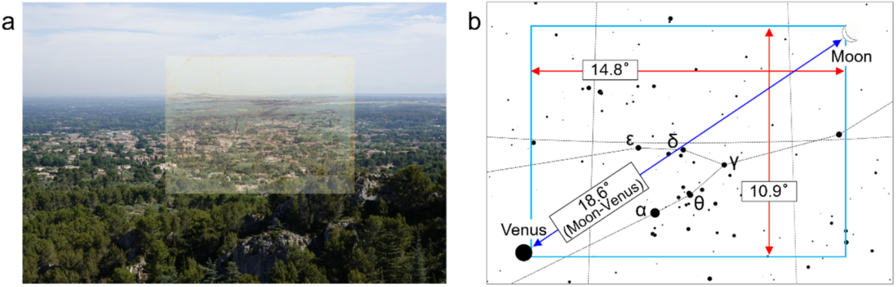
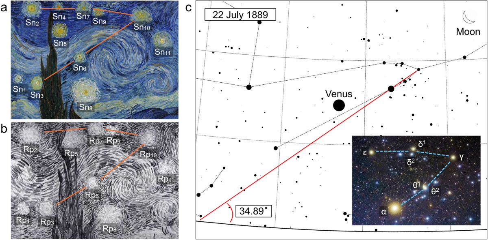
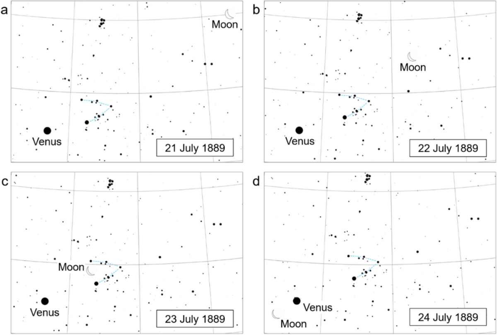
EvidenceMoMA's 1941 press release and records, The Art Newspaper, and MoMA Magazine.
Less than you might expect. No colour change has been documented in this painting, and no treatment report has been published, so its history of varnish, lining and retouching is not public.